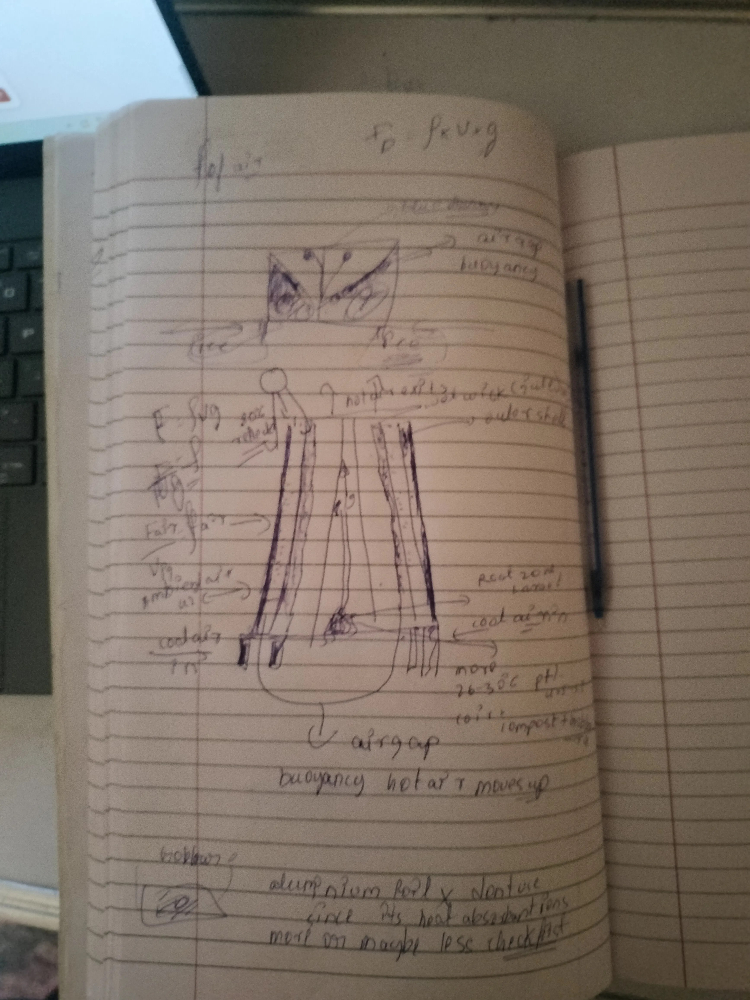

A passive, zero-electricity container that keeps blueberry root-zone temperature at 26–28°C in 42°C ambient heat — built from rice husk ash, jute, and lime wash for ₹1,000.
Vaccinium corymbosum evolved in cool North American forests. Its roots want soil at 15–18°C. Hospete gives them 40–45°C in summer. The plant dies within days above 35°C. Air-conditioned greenhouses cost lakhs. A small farmer with 20 plants cannot afford that.
The insight: only the roots are the bottleneck. The canopy handles 42°C fine. If I can keep just 5 kg of root substrate below 30°C — the viability ceiling — the plant survives and produces fruit.
Build a thermos for the roots, not a greenhouse for the field. Target just 5 kg of soil. Everything else is engineering detail.
| Parameter | Blueberry needs | Hospete gives |
|---|---|---|
| Root zone optimum | 15–18°C | 40–45°C |
| Survival ceiling | ≤ 30°C | 38–45°C |
| Soil pH | 4.5–5.5 | 6.5–8.0 |
| Summer humidity | Stable | <30% dry season |
26–30°C is the viability ceiling, not the optimum. True optimum is 15–18°C — not achievable by passive means in Hospete. BTCS is the difference between zero crop and viable crop.
The design began with a hand-drawn sketch — reproduced here as Figure 1. The sketch already had the buoyancy formula written at the top, the tapered frustum shape, "hot air moves up" labelled correctly, cool air arrows from the base, and a question about aluminium foil coating. The intuition was right. The formal document (v1.0) then introduced 10 errors.
BTCS works through three simultaneous passive mechanisms: radiation control on the outer surface, evaporative cooling from the wick layer, and buoyancy-driven stack ventilation. Together these create a net cooling surplus of +51.6 W/m² in peak summer.

Layer architecture — outside to inside
Hot air in the chimney gap is less dense than ambient air (ideal gas: ρ ∝ 1/T). This density difference creates a pressure difference — buoyancy — that drives airflow upward through the chimney.
v1.0 used Lᵥ = 2260 kJ/kg — the boiling point value. At 40°C operating temperature:
v1.0 calculated ΔT as 42°C ambient − 30°C interior = 12°C. Wrong. The wall heats up in direct sun — like a car roof on a hot day. The insulation works against the wall temperature, not ambient air.
The original design brief introduced 10 errors while formalising the notebook sketch. Each correction was something learned. Click any row to expand.
Adjust ambient temperature and humidity. The calculator runs the corrected thermal budget — all 15 steps — and shows whether BTCS maintains the viability ceiling.
| Season | Ambient | RH | Wall | Heat in | Wick out | Net | Status |
|---|---|---|---|---|---|---|---|
| Peak summer (Apr–May) | 42°C | 25% | 51–60°C | 17 W/m² | 53 W/m² | +36 | ✓ VIABLE |
| Pre-monsoon (May–Jun) | 38°C | 55% | 48°C | 14 W/m² | 24 W/m² | +10 | ✓ VIABLE |
| Monsoon (Jun–Sep) | 30°C | 85% | 36°C | 5 W/m² | 5 W/m² | ~0 | ⚠ FALLBACKS |
| Winter (Nov–Feb) | 24°C | 45% | 30°C | 0 W/m² | 28 W/m² | +28 | ✓ EXCELLENT |
5 kg substrate stores ~18 kJ/K. At 1.7W monsoon ingress, takes 3+ hours to rise 1°C. Nights cool to 22–25°C — system resets daily. Zero extra cost.
Ground at 30cm depth: 23–26°C in monsoon. Rest container base on moist soil instead of concrete. Passive heat sink. Zero extra cost.
Replace HDPE reservoir with unglazed clay matka. Clay sweats via capillary pressure — not stopped by high humidity. 3–5°C cooling at 85% RH. Cost: ₹20–40.
Every item locally sourceable in Hospete. Items marked ★ are additions in v2.0.
Rice husk ash is agricultural waste. Every rice mill in Karnataka has tonnes they need to dispose of — ask any mill, they give it free. Commercial foam insulation for the same volume: ₹200–400. This zero-cost substitution is what makes ₹1,000 achievable.
Blueberries need pH 4.5–5.5. Rice husk ash leaches pH 8–10 — the vapour barrier also blocks this. Three steps:
ETPT (Evolutionary Technology Path Theory) proposes that technology is a mirror of the biology that creates it — shaped by the body's capabilities and the environment's pressures. BTCS is a direct proof: a tool designed entirely around human material constraints (no electricity, local waste materials, passive physics) and agricultural biological limits (the blueberry root-zone ceiling). Change the biology of the farmer, change the tool. This is ETPT.
The original BTCS document explicitly states: "Building on the ETPT framework, the BTCS operates on the principle that full environmental control is unnecessary if we can maintain the invisible variables through passive systems thinking."
↗ Read the ETPT Framework